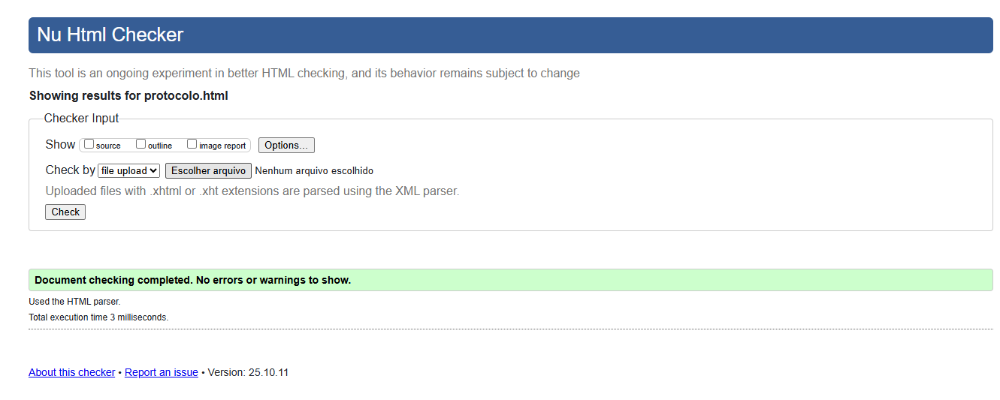
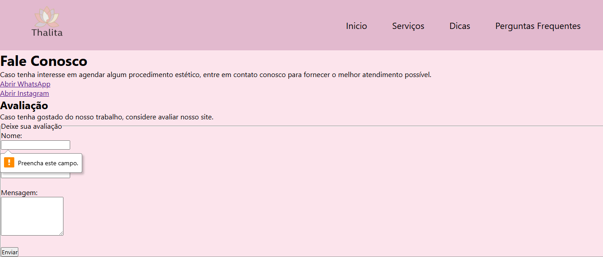

Comprovação de que o código está em conformidade com as regras do HTML5, garantindo sintaxe correta e semântica adequada. Todas as 13 páginas do projeto foram testadas e validadas com sucesso.

Teste de validação realizado em [Ex: index.html] com resultado 100% livre de erros, comprovando a qualidade de todo o código do projeto.
2. Teste de Funcionalidade do Formulário (Requisito 'required')
Comprovação de que as validações nativas do HTML5 (required, type="email", etc.) estão ativas na página de contato.

Evidência do atributo 'required' funcionando na página de contato.
3. Estrutura de Diretórios
Evidência da organização dos arquivos e pastas do projeto, seguindo a estrutura de diretórios solicitada.
Visualização da estrutura de arquivos na pasta raiz.